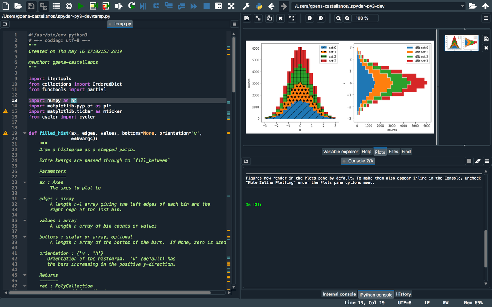

Labs update and May highlights
Time flies when you're having fun. Here is an update of some of the highlights of my second month at Quansight Labs.
The making of a black hole image & GitHub Sponsors
Both Travis and myself were invited by GitHub to attend GitHub Satellite in Berlin. The main reason was that Nat Friedman (GitHub CEO) decided to spend the first 20 minutes of his keynote to highlight the Event Horizon Telescope's black hole image and the open source software that made that imaging possible. This included the scientific Python very prominently - NumPy, Matplotlib, Python, Cython, SciPy, AstroPy and other projects were highlighted. At the same time, Nat introduced new GitHub features like "used by", a triaging role and new dependency graph features and illustrated how those worked for NumPy. These features will be very welcome news to maintainers of almost any project.

The single most visible feature introduced was GitHub Sponsors:

I really enjoyed meeting Devon Zuegel, Product Manager of the Open Source Economy Team at GitHub, in person after previously having had the chance to exchange ideas with her about the funding related needs of scientific Python projects and their core teams. I'm confident that GitHub Sponsors will evolve in a direction that's beneficial to community-driven open source projects.
It was also a pleasure meeting many people I have interacted with before or knew only by name, from core Python and Cython developers like Matthias Klose, Mariatta Wijaya, Stefan Behnel and Christian Heimes, to scientific Python maintainers like Antony Lee (Matplotlib), Marc Garcia (Pandas) and Brigitta Sipocz (AstroPy). The next day I took advantage of the opportunity to visit Maintainerati (highly recommended!) to exchange ideas and experiences with a completely different set of maintainers, from communities as diverse as Node/Javascript, Kubernetes and Debian.
Array computing
Stefan Krah added support for "flexible arrays" to XND. These arrays are capable of supporting GeoJSON, which is an important format for geospatial data. It's highly nested and irregularly shaped, so supporting it is nontrivial - as far as we're aware, XND is the only array library able to do this.
Hameer Abbasi participated in the NumPy sprint at BIDS, which focused on the
redesign of the dtype system. The NumPy team also made significant progress
towards NumPy 1.17, which is shaping up to be the most interesting NumPy
release in a long time. The numpy.fft and numpy.random modules are almost
completely rewritten (faster and more accurate FFTs, and new higher-quality
random number generators!), and the __array_function__ protocol will be
enabled by default. Hameer also received good feedback on
uarray and improved the internals as
a result, resulting in much lower overhead and a much less nested call stack.
JupyterLab
The Jupyter developers at Quansight have been busy. The list of issues in the JupyterLab 1.0 milestone is shrinking rapidly. The final release is expected in June, which will mark a huge achievement of the JupyterLab team.
There has also been significant work going into two new features that are planned for release post-1.0. Quoting team lead Ryan Henning:
"JupyterLab's Data Registry will have its first release on July 12 and will make it easier for developers to create data-centric extensions for JupyterLab. The concept of "a dataset" will finally be a first-class entity within JupyterLab, which will ignite tremendous potential for data-centric interactive plugins.
The debut of JupyterLab's built-in commenting feature will be on June 28 of this year! It will include the ability to comment on any file in JupyterLab, and even the ability to comment on individual lines of text/code within source files."
Spyder
The Spyder team grew in May - I was very happy to welcome Edgar Andrés Margffoy Tuay to Quansight. With Carlos, Gonzalo and Edgar we now have three Spyder maintainers at Quansight Labs. It's great to see the momentum of the Spyder project increasing.
On 21 May the second beta of Spyder 4.0 was released - it was 8 months in the making. The most visible features are the new dark theme and the plots pane:

There's a lot more though - from Language Server Protocol integration to better
pandas.DataFrame support and dedicated Cython, SymPy and Pylab consoles.
Gonzalo's blog post
goes into a lot more detail on this release.
Other PyData core projects
Aaron Meurer is co-mentoring three Google Summer of Code projects for SymPy. SymPy has always benefited a lot from participating in GSoC, with a large part of SymPy's core team having started out via the program. This year seems to be shaping up to be a successful one again, so this is a great way for Aaron to invest his time.
For SciPy, I finalized the Tidelift agreement (see the announcement for details). A steady project income of $2500/month is very nice to have, it gives the SciPy team the opportunity to do things like organize a developer meeting or pay for activities that are hard to get done otherwise (e.g. a long overdue website redesign).
My largest time investment this month for NumPy and SciPy was interacting with tech writers who are interested in participating in the Google Season of Docs program. The quality and enthusiasm of potential applicants has exceeded all my expectations, and I'm really looking forward to involving talented writers in the projects.
Measuring Python API usage
Chris Ostrouchov cracked a tough nut: coming up with a practical method to determine how heavily functions in an API are used, and in what ways. This allows maintainers to obtain hard data when considering questions like "can we deprecate this function?" or "what should we focus on in our documentation?". Chris wrote a detailed blog post on his methodology and initial results. He continues to improve his method in python-api-inspect, and will soon be able to give people an interface to formulate their own questions. There's a lot more to come here!
Funding - Community Work Orders
Within Quansight we're starting to get a much clearer vision for how Labs funding will work, and in particular the concept of a Community Work Order (CWO). In this blog post I articulate our current vision in some detail. It's a nuanced proposition, however we're finding that the concept appeals to companies that have an interest in supporting one or more core PyData projects. It strikes a nice balance between giving project core teams the freedom to set directions and work on things that benefit their whole community, and still meeting specific needs that companies may have.
I'm looking forward to being able to announce new CWOs in June.